ml
Deep Learning
Figure 5.16 Representation of a multi-class linear classification model as a neural network having a single layer of connections. Each basis function is represented by a node, with the solid node representing the 'bias' basis function $\phi_0$, whereas each output $y_1,\ldots,y_N$ is also represented by a node. The links between the nodes represent the corresponding weight and bias parameters.
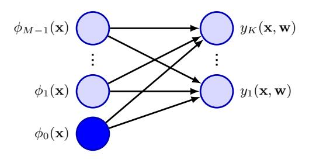
where $y_{nk} = y_k(\phi_n)$, and T is an $N \times K$ matrix of target variables with elements $t_{nk}$. Taking the negative logarithm then gives
$$E(\mathbf{w}_1, \dots, \mathbf{w}_K) = -\ln p(\mathbf{T}|\mathbf{w}_1, \dots, \mathbf{w}_K) = -\sum_{n=1}^N \sum_{k=1}^K t_{nk} \ln y_{nk}, \quad (5.80)$$
which is known as the cross-entropy error function for the multi-class classification problem.
We now take the gradient of the error function with respect to one of the parameter vectors $\mathbf{w}_j$. Making use of the result (5.78) for the derivatives of the softmax function, we obtain
$$\nabla_{\mathbf{w}_j} E(\mathbf{w}_1, \dots, \mathbf{w}_K) = \sum_{n=1}^N (y_{nj} - t_{nj}) \, \boldsymbol{\phi}_n $$ (5.81)
where we have made use of $\sum_k t_{nk} = 1$. Again, we could optimize the parameters through stochastic gradient descent.
Once again, we see the same form arising for the gradient as was found for the sum-of-squares error function with the linear model and for the cross-entropy error with the logistic regression model, namely the product of the error $(y_{nj} - t_{nj})$ times the basis function activation $\phi_n$. These are examples of a more general result that we will explore later.
Linear classification models can be represented as single-layer neural networks as shown in Figure 5.16. If we consider the derivative of the error function with respect to a weight $w_{ik}$, which links basis function $\phi_i(\mathbf{x})$ to output unit $t_k$, we have from (5.81)
$$\frac{\partial E(\mathbf{w}_1, \dots, \mathbf{w}_K)}{\partial w_{ij}} = \sum_{n=1}^N (y_{nk} - t_{nk}) \, \phi_i(\mathbf{x}_n). \tag{5.82}$$
Comparing this with Figure 5.16, we see that, for each data point n this gradient takes the form of the output of the basis function at the input end of the weight link with the 'error' $(y_{nk} - t_{nk})$ at the output end.
Exercise 5.22
Chapter 7
Section 5.4.6
Figure 5.17 Schematic example of a probability density $p(\theta)$ shown by the blue curve, given in this example by a mixture of two Gaussians, along with its cumulative distribution function f(a), shown by the red curve. Note that the value of the blue curve at any point, such as that indicated by the vertical green line, corresponds to the slope of the red curve at the same point. Conversely, the value of the red curve at this point corresponds to the area under the blue curve indicated by the shaded green region. In the stochastic threshold model, the class label takes the value t=1 if the value of $a=\mathbf{w}^T\phi$ exceeds a threshold, otherwise it takes the value t=0. This is equivalent to an activation function given by the cumulative distribution function f(a).
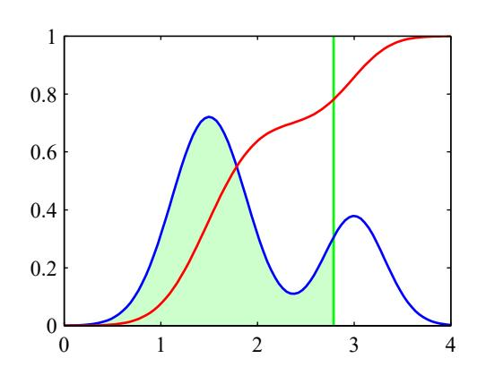
5.4.5 Probit regression
We have seen that, for a broad range of class-conditional distributions described by the exponential family, the resulting posterior class probabilities are given by a logistic (or softmax) transformation acting on a linear function of the feature variables. However, not all choices of class-conditional density give rise to such a simple form for the posterior probabilities, which suggests that it might be worth exploring other types of discriminative probabilistic model. Consider the two-class case, again remaining within the framework of generalized linear models, so that
$$p(t = 1|a) = f(a) (5.83)$$
where $a = \mathbf{w}^{\mathrm{T}} \boldsymbol{\phi}$, and $f(\cdot)$ is the activation function.
One way to motivate an alternative choice for the link function is to consider a noisy threshold model, as follows. For each input $\phi_n$, we evaluate $a_n = \mathbf{w}^T \phi_n$ and then we set the target value according to
$$\begin{cases} t_n = 1, & \text{if } a_n \geqslant \theta, \\ t_n = 0, & \text{otherwise.} \end{cases} $$ (5.84)
If the value of $\theta$ is drawn from a probability density $p(\theta)$, then the corresponding activation function will be given by the cumulative distribution function
$$f(a) = \int_{-\infty}^{a} p(\theta) \, \mathrm{d}\theta \tag{5.85}$$
as illustrated in Figure 5.17.
As a specific example, suppose that the density $p(\theta)$ is given by a zero-mean, unit-variance Gaussian. The corresponding cumulative distribution function is given by
$$\Phi(a) = \int_{-\infty}^{a} \mathcal{N}(\theta|0,1) \,\mathrm{d}\theta, \tag{5.86}$$
which is known as the probit function. It has a sigmoidal shape and is compared with the logistic sigmoid function in Figure 5.12. Note that the use of a Gaussian distribution with general mean and variances does not change the model because this is equivalent to a re-scaling of the linear coefficients w. Many numerical packages can evaluate a closely related function defined by
$$\operatorname{erf}(a) = \frac{2}{\sqrt{\pi}} \int_0^a \exp(-\theta^2/2) \, \mathrm{d}\theta $$ (5.87)
and known as the erf function or error function (not to be confused with the error function of a machine learning model). It is related to the probit function by
$$\Phi(a) = \frac{1}{2} \left\{ 1 + \frac{1}{\sqrt{2}} \operatorname{erf}(a) \right\}. \tag{5.88}$$
The generalized linear model based on a probit activation function is known as probit regression. We can determine the parameters of this model using maximum likelihood by a straightforward extension of the ideas discussed earlier. In practice, the results found using probit regression tend to be like those of logistic regression.
One issue that can occur in practical applications is that of outliers, which can arise for instance through errors in measuring the input vector $\mathbf{x}$ or through mislabelling of the target value t. Because such points can lie a long way to the wrong side of the ideal decision boundary, they can seriously distort the classifier. The logistic and probit regression models behave differently in this respect because the tails of the logistic sigmoid decay asymptotically like $\exp(-x)$ for $|x| \to \infty$, whereas for the probit activation function, they decay like $\exp(-x^2)$, and so the probit model can be significantly more sensitive to outliers.
5.4.6 Canonical link functions
For the linear regression model with a Gaussian noise distribution, the error function, corresponding to the negative log likelihood, is given by (4.11). If we take the derivative with respect to the parameter vector $\mathbf{w}$ of the contribution to the error function from a data point n, this takes the form of the 'error' $y_n - t_n$ times the feature vector $\boldsymbol{\phi}_n$, where $y_n = \mathbf{w}^{\mathrm{T}} \boldsymbol{\phi}_n$. Similarly, for the combination of the logistic-sigmoid activation function and the cross-entropy error function (5.74) and for the softmax activation function with the multi-class cross-entropy error function (5.80), we again obtain this same simple form. We now show that this is a general result of assuming a conditional distribution for the target variable from the exponential family along with a corresponding choice for the activation function known as the canonical link function.
We again make use of the restricted form (3.169) of exponential family distributions. Note that here we are applying the assumption of exponential family distribution to the target variable t, in contrast to Section 5.3.4 where we applied it to the input vector $\mathbf{x}$. We therefore consider conditional distributions of the target variable of the form
$$p(t|\eta, s) = \frac{1}{s} h\left(\frac{t}{s}\right) g(\eta) \exp\left\{\frac{\eta t}{s}\right\}. \tag{5.89}$$
Exercise 5.23
Using the same line of argument as led to the derivation of the result (3.172), we see that the conditional mean of t, which we denote by y, is given by
$$y \equiv \mathbb{E}[t|\eta] = -s\frac{d}{d\eta} \ln g(\eta). \tag{5.90}$$
Thus, y and $\eta$ must related, and we denote this relation through $\eta = \psi(y)$.
Following Nelder and Wedderburn (1972), we define a generalized linear model to be one for which y is a nonlinear function of a linear combination of the input (or feature) variables so that
$$y = f(\mathbf{w}^{\mathrm{T}}\boldsymbol{\phi}) \tag{5.91}$$
where $f(\cdot)$ is known as the activation function in the machine learning literature, and $f^{-1}(\cdot)$ is known as the link function in statistics.
Now consider the log likelihood function for this model, which, as a function of $\eta$, is given by
$$\ln p(\mathbf{t}|\eta, s) = \sum_{n=1}^{N} \ln p(t_n|\eta, s) = \sum_{n=1}^{N} \left\{ \ln g(\eta_n) + \frac{\eta_n t_n}{s} \right\} + \text{const} $$ (5.92)
where we are assuming that all observations share a common scale parameter (which corresponds to the noise variance for a Gaussian distribution, for instance) and so s is independent of n. The derivative of the log likelihood with respect to the model parameters $\mathbf{w}$ is then given by
$$\nabla_{\mathbf{w}} \ln p(\mathbf{t}|\eta, s) = \sum_{n=1}^{N} \left\{ \frac{\mathrm{d}}{\mathrm{d}\eta_{n}} \ln g(\eta_{n}) + \frac{t_{n}}{s} \right\} \frac{\mathrm{d}\eta_{n}}{\mathrm{d}y_{n}} \frac{\mathrm{d}y_{n}}{\mathrm{d}a_{n}} \nabla_{\mathbf{w}} a_{n}$$ $$= \sum_{n=1}^{N} \frac{1}{s} \left\{ t_{n} - y_{n} \right\} \psi'(y_{n}) f'(a_{n}) \phi_{n} $$ (5.93)
where $a_n = \mathbf{w}^T \boldsymbol{\phi}_n$, and we have used $y_n = f(a_n)$ together with the result (5.90) for $\mathbb{E}[t|\eta]$. We now see that there is a considerable simplification if we choose a particular form for the link function $f^{-1}(y)$ given by
$$f^{-1}(y) = \psi(y), \tag{5.94}$$
which gives $f(\psi(y)) = y$ and hence $f'(\psi)\psi'(y) = 1$. Also, because $a = f^{-1}(y)$, we have $a = \psi$ and hence $f'(a)\psi'(y) = 1$. In this case, the gradient of the error function reduces to
$$\nabla \ln E(\mathbf{w}) = \frac{1}{s} \sum_{n=1}^{N} \{y_n - t_n\} \boldsymbol{\phi}_n. $$ (5.95)
We have seen that there is a natural pairing between the choice of error function and the choice of output-unit activation function. Although we have derived this result in the context of single-layer network models, the same considerations apply to deep neural networks discussed in later chapters.
Exercises
- 5.1 (*) Consider a classification problem with K classes and a target vector $\mathbf{t}$ that uses a 1-of-K binary coding scheme. Show that the conditional expectation $\mathbb{E}[\mathbf{t}|\mathbf{x}]$ is given by the posterior probability $p(\mathcal{C}_k|\mathbf{x})$.
- 5.2 $(\star \star)$ Given a set of data points $\{\mathbf{x}_n\}$, we can define the convex hull to be the set of all points $\mathbf{x}$ given by
$$\mathbf{x} = \sum_{n} \alpha_n \mathbf{x}_n \tag{5.96}$$
where $\alpha_n \geqslant 0$ and $\sum_n \alpha_n = 1$. Consider a second set of points $\{\mathbf{y}_n\}$ together with their corresponding convex hull. By definition, the two sets of points will be linearly separable if there exists a vector $\hat{\mathbf{w}}$ and a scalar $w_0$ such that $\hat{\mathbf{w}}^T\mathbf{x}_n + w_0 > 0$ for all $\mathbf{x}_n$ and $\hat{\mathbf{w}}^T\mathbf{y}_n + w_0 < 0$ for all $\mathbf{y}_n$. Show that if their convex hulls intersect, the two sets of points cannot be linearly separable, and conversely that if they are linearly separable, their convex hulls do not intersect.
5.3 ($\star \star$) Consider the minimization of a sum-of-squares error function (5.14), and suppose that all the target vectors in the training set satisfy a linear constraint
$$\mathbf{a}^{\mathrm{T}}\mathbf{t}_{n} + b = 0 \tag{5.97}$$
where $\mathbf{t}_n$ corresponds to the nth row of the matrix $\mathbf{T}$ in (5.14). Show that as a consequence of this constraint, the elements of the model prediction $\mathbf{y}(\mathbf{x})$ given by the least-squares solution (5.16) also satisfy this constraint, so that
$$\mathbf{a}^{\mathrm{T}}\mathbf{y}(\mathbf{x}) + b = 0. \tag{5.98}$$
To do so, assume that one of the basis functions $\phi_0(\mathbf{x}) = 1$ so that the corresponding parameter $w_0$ plays the role of a bias.
- 5.4 $(\star \star)$ Extend the result of Exercise 5.3 to show that if multiple linear constraints are satisfied simultaneously by the target vectors, then the same constraints will also be satisfied by the least-squares prediction of a linear model.
- 5.5 ($\star$) Use the definition (5.38), along with (5.30) and (5.31) to derive the result (5.39) for the F-score.
- 5.6 (**) Consider two non-negative numbers a and b, and show that, if $a \leq b$, then $a \leq (ab)^{1/2}$. Use this result to show that, if the decision regions of a two-class classification problem are chosen to minimize the probability of misclassification, this probability will satisfy
$$p(\text{mistake}) \leq \int \{p(\mathbf{x}, \mathcal{C}_1)p(\mathbf{x}, \mathcal{C}_2)\}^{1/2} d\mathbf{x}.$$ (5.99)
5.7 (*) Given a loss matrix with elements $L_{kj}$, the expected risk is minimized if, for each x, we choose the class that minimizes (5.23). Verify that, when the loss matrix
is given by $L_{kj} = 1 - I_{kj}$, where $I_{kj}$ are the elements of the identity matrix, this reduces to the criterion of choosing the class having the largest posterior probability. What is the interpretation of this form of loss matrix?
- 5.8 (*) Derive the criterion for minimizing the expected loss when there is a general loss matrix and general prior probabilities for the classes.
- 5.9 (*) Consider the average of the posterior probabilities over a set of N data points in the form
$$\frac{1}{N} \sum_{N=1}^{N} p(\mathcal{C}_k | \mathbf{x}_n). \tag{5.100}$$
By taking the limit $N \to \infty$, show that this quantity approaches the prior class probability $p(\mathcal{C}_k)$.
- 5.10 (**) Consider a classification problem in which the loss incurred when an input vector from class $C_k$ is classified as belonging to class $C_j$ is given by the loss matrix $L_{kj}$ and for which the loss incurred in selecting the reject option is $\lambda$. Find the decision criterion that will give the minimum expected loss. Verify that this reduces to the reject criterion discussed in Section 5.2.3 when the loss matrix is given by $L_{kj} = 1 I_{kj}$. What is the relationship between $\lambda$ and the rejection threshold $\theta$?
- 5.11 (*) Show that the logistic sigmoid function (5.42) satisfies the property $\sigma(-a) = 1 \sigma(a)$ and that its inverse is given by $\sigma^{-1}(y) = \ln \{y/(1-y)\}$.
- 5.12 ($\star$) Using (5.40) and (5.41), derive the result (5.48) for the posterior class probability in the two-class generative model with Gaussian densities, and verify the results (5.49) and (5.50) for the parameters w and $w_0$.
- 5.13 (*) Consider a generative classification model for K classes defined by prior class probabilities $p(\mathcal{C}_k) = \pi_k$ and general class-conditional densities $p(\phi|\mathcal{C}_k)$ where $\phi$ is the input feature vector. Suppose we are given a training data set $\{\phi_n, \mathbf{t}_n\}$ where $n=1,\ldots,N$, and $\mathbf{t}_n$ is a binary target vector of length K that uses the 1-of-K coding scheme, so that it has components $t_{nj} = I_{jk}$ if data point n is from class $\mathcal{C}_k$. Assuming that the data points are drawn independently from this model, show that the maximum-likelihood solution for the prior probabilities is given by
$$\pi_k = \frac{N_k}{N} \tag{5.101}$$
where $N_k$ is the number of data points assigned to class $C_k$.
5.14 (**) Consider the classification model of Exercise 5.13 and now suppose that the class-conditional densities are given by Gaussian distributions with a shared covariance matrix, so that
$$p(\phi|\mathcal{C}_k) = \mathcal{N}(\phi|\boldsymbol{\mu}_k, \boldsymbol{\Sigma}). \tag{5.102}$$
Show that the maximum likelihood solution for the mean of the Gaussian distribution for class $C_k$ is given by
$$\mu_k = \frac{1}{N_k} \sum_{n=1}^{N} t_{nk} \phi_n, \tag{5.103}$$
which represents the mean of those feature vectors assigned to class $C_k$. Similarly, show that the maximum likelihood solution for the shared covariance matrix is given by
$$\Sigma = \sum_{k=1}^{K} \frac{N_k}{N} \mathbf{S}_k \tag{5.104}$$
where
$$\mathbf{S}_{k} = \frac{1}{N_{k}} \sum_{n=1}^{N} t_{nk} (\boldsymbol{\phi}_{n} - \boldsymbol{\mu}_{k}) (\boldsymbol{\phi}_{n} - \boldsymbol{\mu}_{k})^{\mathrm{T}}.$$ (5.105)
Thus, $\Sigma$ is given by a weighted average of the covariances of the data associated with each class, in which the weighting coefficients are given by the prior probabilities of the classes.
- 5.15 (**) Derive the maximum likelihood solution for the parameters $\{\mu_{ki}\}$ of the probabilistic naive Bayes classifier with discrete binary features described in Section 5.3.3.
- 5.16 (**) Consider a classification problem with K classes for which the feature vector φ has M components each of which can take L discrete states. Let the values of the components be represented by a 1-of-L binary coding scheme. Further suppose that, conditioned on the class C<sub>k</sub>, the M components of φ are independent, so that the class-conditional density factorizes with respect to the feature vector components. Show that the quantities a<sub>k</sub> given by (5.46), which appear in the argument to the softmax function describing the posterior class probabilities, are linear functions of the components of φ. Note that this represents an example of a naive Bayes model.
Section 11.2.3
- 5.17 ($\star\star$) Derive the maximum likelihood solution for the parameters of the probabilistic naive Bayes classifier described in Exercise 5.16.
- 5.18 (★) Verify the relation (5.72) for the derivative of the logistic sigmoid function defined by (5.42).
- 5.19 (*) By making use of the result (5.72) for the derivative of the logistic sigmoid, show that the derivative of the error function (5.74) for the logistic regression model is given by (5.75).
- 5.20 (*) Show that for a linearly separable data set, the maximum likelihood solution for the logistic regression model is obtained by finding a vector w whose decision boundary $\mathbf{w}^{\mathrm{T}} \boldsymbol{\phi}(\mathbf{x}) = 0$ separates the classes and then taking the magnitude of w to infinity.
- 5.21 (*) Show that the derivatives of the softmax activation function (5.76), where the $a_k$ are defined by (5.77), are given by (5.78).
- 5.22 ($\star$) Using the result (5.78) for the derivatives of the softmax activation function, show that the gradients of the cross-entropy error (5.80) are given by (5.81).
- 5.23 ($\star$) Show that the probit function (5.86) and the erf function (5.87) are related by (5.88).
- 5.24 (**) Suppose we wish to approximate the logistic sigmoid $\sigma(a)$ defined by (5.42) by a scaled probit function $\Phi(\lambda a)$, where $\Phi(a)$ is defined by (5.86). Show that if $\lambda$ is chosen so that the derivatives of the two functions are equal at a=0, then $\lambda^2=\pi/8$.
Chapter 4
Chapter 5
In recent years, neural networks have emerged as, by far, the most important machine learning technology for practical applications, and we therefore devote a large fraction of this book to studying them. Previous chapters have already laid many of the foundations we will need. In particular, we have seen that linear regression models that comprise linear combinations of fixed nonlinear basis functions can be expressed as neural networks having a single layer of weight and bias parameters. Likewise, classification models based on linear combinations of basis functions can also be viewed as single-layer neural networks. These allowed us to introduce several important concepts before we embark on a discussion of more complex multilayered networks in this chapter.
Given a sufficient number of suitably chosen basis functions, such linear models can approximate any given nonlinear transformation from inputs to outputs to any desired accuracy and might therefore appear to be sufficient to tackle any practical
application. However, these models have some severe limitations, and so we will begin our discussion of neural networks by exploring these limitations and understanding why it is necessary to use basis functions that are themselves learned from data. This leads naturally to a discussion of neural networks having more than one layer of learnable parameters. These are known as feed-forward networks or multilayer perceptrons. We will also discuss the benefits of having many such layers of processing, leading to the key concept of deep neural networks that now dominate the field of machine learning.
Section 6.3.6
6.1. Limitations of Fixed Basis Functions
Chapter 5
Linear basis function models for classification are based on linear combinations of basis functions $\phi_j(\mathbf{x})$ and take the form
$$y(\mathbf{x}, \mathbf{w}) = f\left(\sum_{j=1}^{M} w_j \phi_j(\mathbf{x}) + w_0\right) $$ (6.1)
Chapter 4
where $f(\cdot)$ is a nonlinear output activation function. Linear models for regression take the same form but with $f(\cdot)$ replaced by the identity. These models allow for an arbitrary set of nonlinear basis functions $\{\phi_i(\mathbf{x})\}$, and because of the generality of these basis functions, such models can in principle provide a solution to any regression or classification problem. This is true in a trivial sense in that if one of the basis functions corresponds to the desired input-to-output transformation, then the learnable linear layer simply has to copy the value of this basis function to the output of the model.
More generally, we would expect that a sufficiently large and rich set of basis functions would allow any desired function to be approximated to arbitrary accuracy. It would seem therefore that such linear models constitute a general purpose framework for solving problems in machine learning. Unfortunately, there are some significant shortcomings with linear models, which arise from the assumption that the basis functions $\phi_j(\mathbf{x})$ are fixed and independent of the training data. To understand these limitations, we start by looking at the behaviour of linear models as the number of input variables is increased.
6.1.1 The curse of dimensionality
Section 1.2
Consider a simple regression model for a single input variable given by a polynomial of order M in the form
$$y(x, \mathbf{w}) = w_0 + w_1 x + w_2 x^2 + \ldots + w_M x^M$$ (6.2)
and let us see what happens if we increase the number of inputs. If we have D input variables $\{x_1,\ldots,x_D\}$, then a general polynomial with coefficients up to order 3
Figure 6.1 Plot of the Iris data in which red, green, and blue points denote three species of iris flower and the axes represent measurements of the length and width of the sepal, respectively. Our goal is to classify a new test point such as the one denoted by ×.
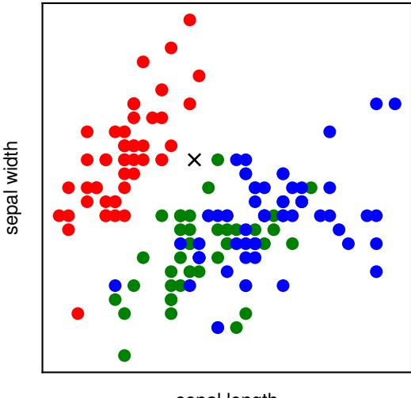
sepal length
would take the form
$$y(\mathbf{x}, \mathbf{w}) = w_0 + \sum_{i=1}^{D} w_i x_i + \sum_{i=1}^{D} \sum_{j=1}^{D} w_{ij} x_i x_j + \sum_{i=1}^{D} \sum_{j=1}^{D} \sum_{k=1}^{D} w_{ijk} x_i x_j x_k. $$ (6.3)
As D increases, the growth in the number of independent coefficients is $\mathcal{O}(D^3)$, whereas for a polynomial of order M, the growth in the number of coefficients is $\mathcal{O}(D^M)$ (Bishop, 2006). We see that in spaces of higher dimensionality, polynomials can rapidly become unwieldy and of little practical utility.
The severe difficulties that can arise in spaces of many dimensions is sometimes called the curse of dimensionality (Bellman, 1961). It is not limited to polynomial regression but is in fact quite general. Consider the use of linear models for solving classification problems. Figure 6.1 shows a plot of data from the Iris data set comprising 50 observations taken from each of three species of iris flowers. Each observation has four variables representing measurements of the sepal length, sepal width, petal length, and petal width. For this illustration, we consider only the sepal length and sepal width variables. Given these 150 observations as training data, our goal is to classify a new test point, such as the one denoted by the cross in Figure 6.1, by assigning it to one of the three species. We observe that the cross is close to several red points, and so we might suppose that it belongs to the red class. However, there are also some green points nearby, so we might think that it could instead belong to the green class. It seems less likely that it belongs to the blue class. The intuition here is that the identity of the cross should be determined more strongly by nearby points from the training set and less strongly by more distant points, and this intuition turns out to be reasonable.
One very simple way of converting this intuition into a learning algorithm would be to divide the input space into regular cells, as indicated in Figure 6.2. When we are given a test point and we wish to predict its class, we first decide which cell it
Figure 6.2 Illustration of a simple approach for solving classification problems in which the input space is divided into cells and any new test point is assigned to the class that has the most representatives in the same cell as the test point. As we shall see shortly, this simplistic approach has some severe shortcomings.
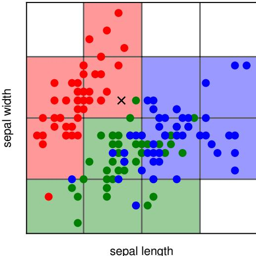
sepai ierigi
belongs to, and then we find all the training data points that fall in the same cell. The identity of the test point is predicted to be the same as the class having the largest number of training points in the same cell as the test point (with ties being broken at random). We can view this as a basis function model in which there is a basis function $\phi_i(\mathbf{x})$ for each grid cell, which simply returns zero if $\mathbf{x}$ lies outside the grid cell, and otherwise returns the majority class of the training data points that fall inside the cell. The output of the model is then given by the sum of the outputs of all the basis functions.
There are numerous problems with this naive approach, but one of the most severe becomes apparent when we consider its extension to problems having larger numbers of input variables, corresponding to input spaces of higher dimensionality. The origin of the problem is illustrated in Figure 6.3, which shows that, if we divide a region of a space into regular cells, then the number of such cells grows exponentially with the dimensionality of the space. The challenge with an exponentially large number of cells is that we would need an exponentially large quantity of training
Figure 6.3 Illustration of the curse of dimensionality, showing how the number of regions of a regular grid grows exponentially with the dimensionality D of the space. For clarity, only a subset of the cubical regions are shown for D=3.
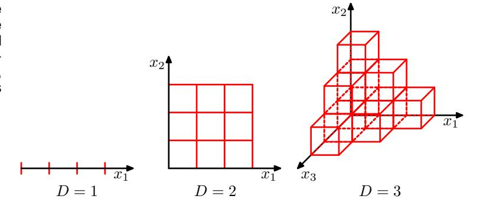
Figure 6.4 Plot of the fraction of the volume of a hypersphere of radius r=1 lying in the range $r=1-\epsilon$ to r=1 for various values of the dimensionality D.
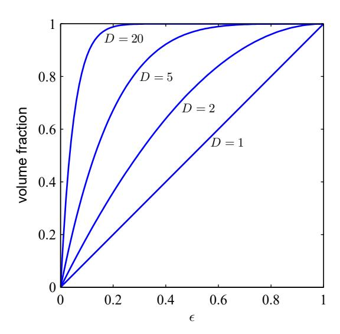
data to ensure that the cells are not empty. We have already seen in Figure 6.2 that some cells contain no training points. Hence, a test point in such cells cannot be classified. Clearly, we have no hope of applying such a technique in a space of more than a few variables. The difficulties with both the polynomial regression example and the Iris data classification example arise because the basis functions were chosen independently of the problem being solved. We will need to be more sophisticated in our choice of basis functions if we are to circumvent the curse of dimensionality.
Section 6.1.4
6.1.2 High-dimensional spaces
First, however, we will look more closely at the properties of spaces with higher dimensionality where our geometrical intuitions, formed through a life spent in a space of three dimensions, can fail badly. As a simple example, consider a hypersphere of radius r=1 in a space of D dimensions, and ask what is the fraction of the volume of the hypersphere that lies between radius $r=1-\epsilon$ and r=1. We can evaluate this fraction by noting that the volume $V_D(r)$ of a hypersphere of radius r in D dimensions must scale as $r^D$, and so we write
$$V_D(r) = K_D r^D (6.4)$$
Exercise 6.1
where the constant $K_D$ depends only on D. Thus, the required fraction is given by
$$\frac{V_D(1) - V_D(1 - \epsilon)}{V_D(1)} = 1 - (1 - \epsilon)^D, \tag{6.5}$$
which is plotted as a function of $\epsilon$ for various values of D in Figure 6.4. We see that, for large D, this fraction tends to 1 even for small values of $\epsilon$. Thus, we arrive at the remarkable result that, in spaces of high dimensionality, most of the volume of a hypersphere is concentrated in a thin shell near the surface!
Figure 6.5 Plot of the probability density with respect to radius r of a Gaussian distribution for various values of the dimensionality D. In a high-dimensional space, most of the probability mass of a Gaussian is located within a thin shell at a specific radius.
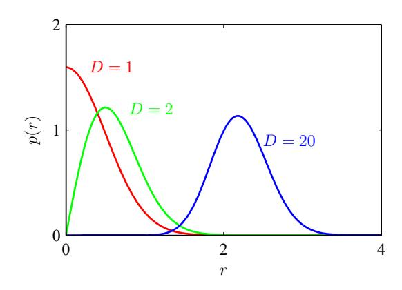
Exercise 6.3
As a further example of direct relevance to machine learning, consider the behaviour of a Gaussian distribution in a high-dimensional space. If we transform from Cartesian to polar coordinates and then integrate out the directional variables, we obtain an expression for the density p(r) as a function of radius r from the origin. Thus, $p(r)\delta r$ is the probability mass inside a thin shell of thickness $\delta r$ located at radius r. This distribution is plotted, for various values of D, in Figure 6.5, and we see that for large D, the probability mass of the Gaussian is concentrated in a thin shell at a specific radius.
In this book, we make extensive use of illustrative examples involving one or two variables, because this makes it particularly easy to visualize these spaces graphically. The reader should be warned, however, that not all intuitions developed in spaces of low dimensionality will generalize to situations involving many dimensions.
Finally, although we have talked about the curse of dimensionality, there can also be advantages to working in high-dimensional spaces. Consider the situation shown in Figure 6.6. We see that this data set, in which each data point consists of a pair of values $(x_1, x_2)$, is linearly separable, but when only the value of $x_1$ is observed, the classes have a strong overlap. The classification problem is therefore much easier in the higher-dimensional space.
6.1.3 Data manifolds
With both the polynomial regression model and the grid-based classifier in Figure 6.2, we saw that the number of basis functions grows rapidly with dimensionality, making such methods impractical for applications involving even a few dozen variables, never mind the millions of inputs that often arise with, say, image processing. The problem is that the basis functions are fixed ahead of time and do not depend on the data, or indeed even on the specific problem being solved. We need to find a way to create basis functions that are tuned to the particular application.
Although the curse of dimensionality certainly raises important issues for machine learning applications, it does not prevent us from finding effective techniques applicable to high-dimensional spaces. One reason for this is that real data will generally be confined to a region of the data space having lower effective dimensional spaces.
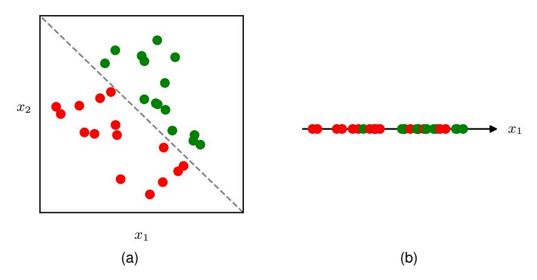
Figure 6.6 Illustration of a data set in two dimensions $(x_1, x_2)$ in which data points from the two classes depicted using green and red circles can be separated by a linear decision surface, as seen in (a). If, however, only the variable $x_1$ is measured then the classes are no longer separable, as seen in (b).
sionality. Consider the images shown in Figure 6.7. Each image is a point in a high-dimensional space whose dimensionality is determined by the number of pixels. Because the objects can occur at different vertical and horizontal positions within the image and in different orientations, there are three degrees of freedom of variability between images, and a set of images will, to a first approximation, live on a three-dimensional manifold embedded within the high-dimensional space. Due to the complex relationships between the object position or orientation and the pixel intensities, this manifold will be highly nonlinear.
In fact, the number of pixels is really an artefact of the image generation process since they represent measurements of a continuous world. Capturing the same image at a higher resolution increases the dimensionality D of the data space without changing the fact that the images still live on a three-dimensional manifold. If we can associate localized basis functions with the data manifold, rather than with the entire high-dimensional data space, we might expect that the number of required basis functions would grow exponentially with the dimensionality of the manifold rather than with the dimensionality of the data space. Since the manifold will typically have a much lower dimensionality than the data space, this represents a huge
Figure 6.7 Examples of images of a hand-written digit that differ in the location of the digit within the images as well as in their orientation. This data lives on a nonlinear three-dimensional manifold within the high-dimensional image space.
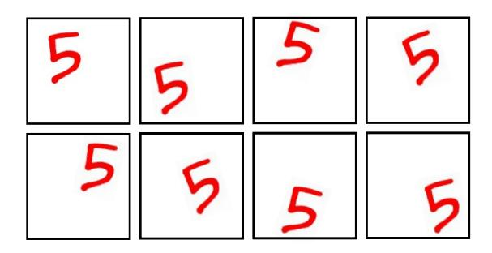
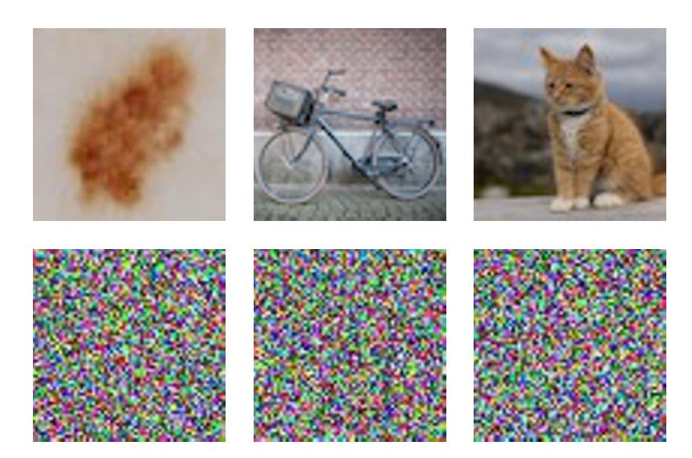
Figure 6.8 The top row shows examples of natural images of size $64 \times 64$ pixels, whereas the bottom row shows randomly generated images of the same size obtained by drawing pixel values from a uniform probability distribution over the possible pixel colours.
improvement. Effectively, neural networks learn a set of basis functions that are adapted to data manifolds. Moreover, for a particular application, not all directions within the manifold may be significant. For example, if we wish to determine only the orientation, and not the position, of the object in Figure 6.7, then there is only one relevant degree of freedom on the manifold and not three. Neural networks are also able to learn which directions on the manifold are relevant to predicting the desired outputs.
Another way to see that real data is confined to low-dimensional manifolds is to consider the task of generating random images. In Figure 6.8 we see examples of natural images along with examples of synthetic images of the same resolution generated by sampling each of the red, green, and blue intensities at each pixel independently at random from a uniform distribution. We see that none of the synthetic images look at all like natural images. The reason is that these random images lack the very strong correlations between pixels that natural images exhibit. For example, two adjacent pixels in a natural image have a much higher probability of having the same, or very similar, colour, than would two adjacent images in the random examples. Each of the images in Figure 6.8 corresponds to a point in a high-dimensional space, yet natural images cover only a tiny fraction of this space.
6.1.4 Data-dependent basis functions
We have seen that simple basis functions that are chosen independently of the problem being solved can run into significant limitations, particularly in spaces of high dimensionality. If we want to use basis functions in such situations, then one approach would be to use expert knowledge to hand-craft the basis functions in a
way that is specific to each application. For many years, this was the mainstream approach in machine learning. Basis functions, often called features, would be determined by a combination of domain knowledge and trial-and-error. However, this approach met with limited success and was superseded by data-driven approaches in which basis functions are learned from the training data. Domain knowledge still plays a role in modern machine learning, but at a more qualitative level in designing network architectures where it can capture appropriate inductive bias, as we will see in later chapters.
Section 9.1
Since data in a high-dimensional space may be confined to a low-dimensional manifold, we do not need basis functions that densely fill the whole input space, but instead we can use basis functions that are themselves associated with the data manifold. One way to do this is to have one basis function associated with each data point in the training set, which ensures that the basis functions are automatically adapted to the underlying data manifold. An example of such a model is that of radial basis functions (Broomhead and Lowe, 1988), which have the property that each basis function depends only on the radial distance (typically Euclidean) from a central vector. If the basis centres are chosen to be the input data values $\{x_n\}$ then there is one basis function $\phi_n(x)$ for each data point, which will therefore capture the whole of the data manifold. A typical choice for a radial basis function is
$$\phi_n(\mathbf{x}) = \exp\left(-\frac{\|\mathbf{x} - \mathbf{x}_n\|^2}{s^2}\right) $$ (6.6)
where s is a parameter controlling the width of the basis function. Although it can be quick to set up such a model, a major problem with this technique is that it becomes computationally unwieldy for large data sets. Moreover, the model needs careful regularization to avoid severe over-fitting.
A related approach, called a support vector machine or SVM (Vapnik, 1995; Schölkopf and Smola, 2002; Bishop, 2006), addresses this by again defining basis functions that are centred on each of the training data points and then selecting a subset of these automatically during training. As a result, the effective number of basis functions in the resulting models is generally much smaller than the number of training points, although it is often still relatively large and typically increases with the size of the training set. Support vector machines also do not produce probabilistic outputs, and they do not naturally generalize to more than two classes. Methods such as radial basis functions and support vector machines have been superseded by deep neural networks, which are much better at exploiting very large data sets efficiently. Moreover, as we will see later, neural networks are able to learn deep hierarchical representations, which are crucial to achieving high prediction accuracy in more complex applications.
6.2. Multilayer Networks
In the previous section, we saw that to apply linear models of the form (6.1) to problems involving large-scale data sets and high-dimensional spaces, we need to find a set of basis functions that is tuned to the problem being solved. The key idea behind neural networks is to choose basis functions $\phi_j(\mathbf{x})$ that themselves have learnable parameters and then allow these parameters to be adjusted, along with the coefficients $\{w_j\}$, during training. We then optimize the whole model by minimizing an error function using gradient-based optimization methods, such as stochastic gradient descent, where the error function is defined jointly across all the parameters in the model.
There are, of course, many ways to construct parametric nonlinear basis functions. One key requirement is that they must be differentiable functions of their learnable parameters so that we can apply gradient-based optimization. The most successful choice has been to use basis functions that follow the same form as (6.1), so that each basis function is itself a nonlinear function of a linear combination of the inputs, where the coefficients in the linear combination are learnable parameters. Note that this construction can clearly be extended recursively to give a hierarchical model with many layers, which forms the basis for deep neural networks.
Consider a basic neural network model having two layers of learnable parameters. First, we construct M linear combinations of the input variables $x_1, \ldots, x_D$ in the form
$$a_j^{(1)} = \sum_{i=1}^{D} w_{ji}^{(1)} x_i + w_{j0}^{(1)} $$ (6.7)
where $j=1,\ldots,M$, and the superscript (1) indicates that the corresponding parameters are in the first 'layer' of the network. We will refer to the parameters $w_{ji}^{(1)}$ as weights and the parameters $w_{j0}^{(1)}$ as biases, while the quantities $a_j^{(1)}$ are called pre-activations. Each of the quantities $a_j$ is then transformed using a differentiable, nonlinear activation function $h(\cdot)$ to give
$$z_j^{(1)} = h(a_j^{(1)}), (6.8)$$
which represent the outputs of the basis functions in (6.1). In the context of neural networks, these basis functions are called hidden units. We will explore various choices for the nonlinear function $h(\cdot)$ shortly, but here we note that provided the derivative $h'(\cdot)$ can be evaluated, then the overall network function will be differentiable. Following (6.1), these values are again linearly combined to give
$$a_k^{(2)} = \sum_{j=1}^{M} w_{kj}^{(2)} z_j^{(1)} + w_{k0}^{(2)} $$ (6.9)
where $k=1,\ldots,K$, and K is the total number of outputs. This transformation corresponds to the second layer of the network, and again the $w_{k0}^{(2)}$ are bias parameters. Finally, the $\{a_k^{(2)}\}$ are transformed using an appropriate output-unit activation
Chapter 7
Section 6.3
Chapter 4
Figure 6.9 Network diagram for a two-laver neural network. The input, hidden, and output variables are represented by nodes, and the weight parameters are represented by links between the nodes. The bias parameters are denoted by links coming from additional input and hidden variables $x_0$ and $z_0 $which are themselves denoted by solid nodes. Arrows denote the direction of information flow through the network during forward propagation.
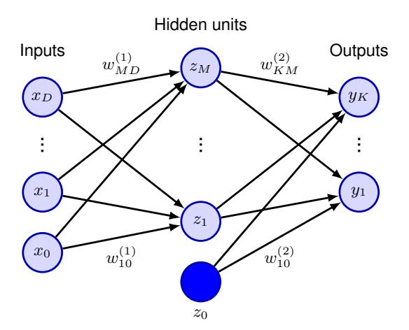
function $f(\cdot)$ to give a set of network outputs $y_k$. A two-layer neural network can be represented in diagram form as shown in Figure 6.9.
6.2.1 Parameter matrices
Section 4.1.1
As we discussed in the context of linear regression models, the bias parameters in (6.7) can be absorbed into the set of weight parameters by defining an additional input variable $x_0$ whose value is clamped at $x_0 = 1$, so that (6.7) takes the form
$$a_j = \sum_{i=0}^{D} w_{ji}^{(1)} x_i. {(6.10)}$$
We can similarly absorb the second-layer biases into the second-layer weights, so that the overall network function becomes
$$y_k(\mathbf{x}, \mathbf{w}) = f\left(\sum_{j=0}^M w_{kj}^{(2)} h\left(\sum_{i=0}^D w_{ji}^{(1)} x_i\right)\right).$$ (6.11)
Another notation that will prove convenient at various points in the book is to represent the inputs as a column vector $\mathbf{x} = (x_1, \dots, x_N)^T$ and then to gather the weight and bias parameters in (6.11) into matrices to give
$$\mathbf{y}(\mathbf{x}, \mathbf{w}) = f\left(\mathbf{W}^{(2)} h\left(\mathbf{W}^{(1)} \mathbf{x}\right)\right) \tag{6.12}$$
where $f(\cdot)$ and $h(\cdot)$ are evaluated on each vector element separately.
6.2.2 Universal approximation
The capability of a two-layer network to model a broad range of functions is illustrated in Figure 6.10. This figure also shows how individual hidden units work collaboratively to approximate the final function. The role of hidden units in a simple classification problem is illustrated in Figure 6.11.
Figure 6.10 Illustration of the capability of a two-layer neural network to approximate four different functions: (a) $f(x) = x^2$, (b) f(x) =$\sin(x)$, (c), f(x) = |x|, and (d) f(x) = H(x) where H(x) is the Heaviside step function. In each case, N=50 data points, shown as blue dots, have been sampled uniformly in x over the interval (-1,1)and the corresponding values of f(x) evaluated. These data points are then used to train a two-laver network having three hidden units with tanh activation functions and linear output units. The resulting network functions are shown by the red curves, and the outputs of the three hidden units are shown by the three dashed curves.
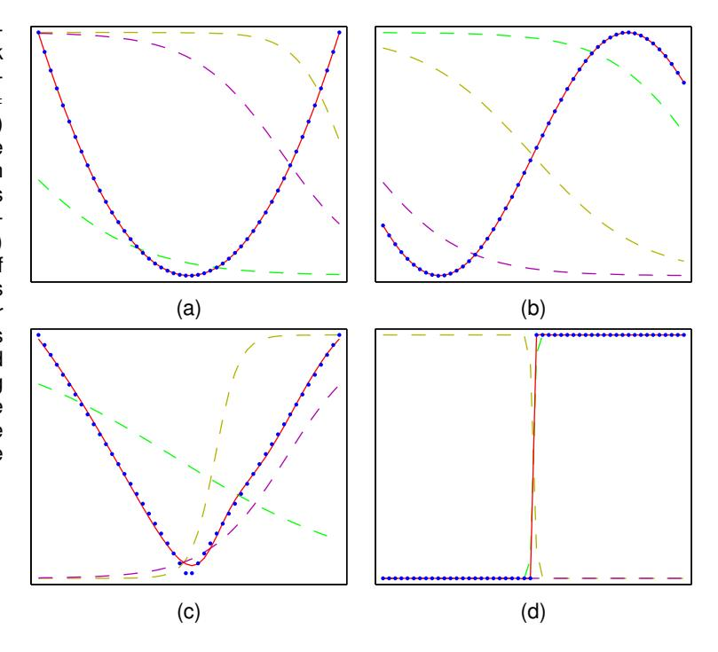
The approximation properties of two-layer feed-forward networks were widely studied in the 1980s, with various theorems showing that, for a wide range of activation functions, such networks can approximate any function defined over a continuous subset of $\mathbb{R}^D$ to arbitrary accuracy (Funahashi, 1989; Cybenko, 1989; Hornik, Stinchcombe, and White, 1989; Leshno et al., 1993). A similar result holds for functions from any finite-dimensional discrete space to any another. Neural networks are therefore said to be universal approximators.
Although such theorems are reassuring, they tell us only that there exists a network that can represent the required function. In some cases, they may require networks that have an exponentially large number of hidden units. Moreover, they say nothing about whether such a network can be found by a learning algorithm. Furthermore, we will see later that the no free lunch theorem says that we can never find a truly universal machine learning algorithm. Finally, although networks having two layers of weights are universal approximators, in a practical application, there can be huge benefits in considering networks having many more than two layers that can learn hierarchical internal representations. All these points support the drive towards deep learning.
6.2.3 Hidden unit activation functions
We have seen that the activation functions for the output units are determined by the kind of distribution being modelled. For the hidden units, however, the only requirement is that they need to be differentiable, which leaves a wide range of pos-